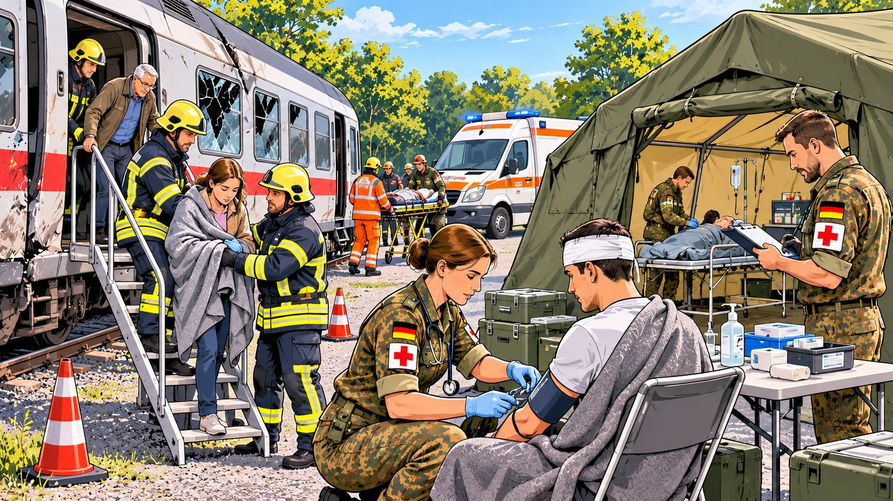

Militärische Nachrichten · A2–B117 – Gemeinsame Katastrophenschutzübung
Nachrichtentext anzeigen
Die Bundeswehr, die Feuerwehr, das Technische Hilfswerk und mehrere zivile Rettungsorganisationen haben am Wochenende gemeinsam den Ernstfall trainiert. Bei der Übung wurde ein schweres Zugunglück mit zahlreichen Verletzten simuliert. Mehr als 100 freiwillige Helfer stellten die verletzten Personen dar. Die Feuerwehr hatte die Aufgabe, eingeschlossene Personen aus den beschädigten Waggons zu befreien. Der Sanitätsdienst der Bundeswehr baute eine mobile Behandlungseinrichtung auf. Dort wurden die Patienten untersucht, medizinisch versorgt und für den Weitertransport vorbereitet. Schwer verletzte Patienten wurden mit Rettungshubschraubern abtransportiert, während leichter verletzte Personen mit Krankenwagen in umliegende Krankenhäuser gebracht wurden. Bei der Übung stand besonders die Kommunikation zwischen den verschiedenen Einsatzkräften im Mittelpunkt.